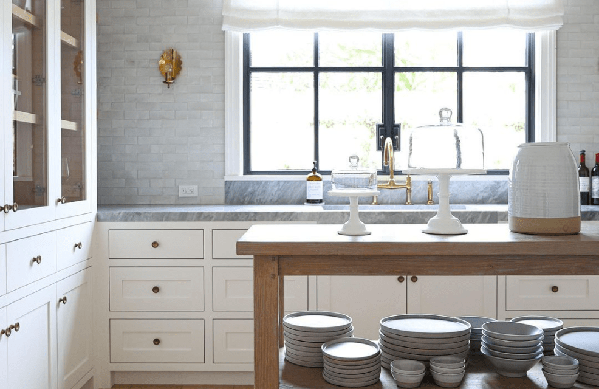
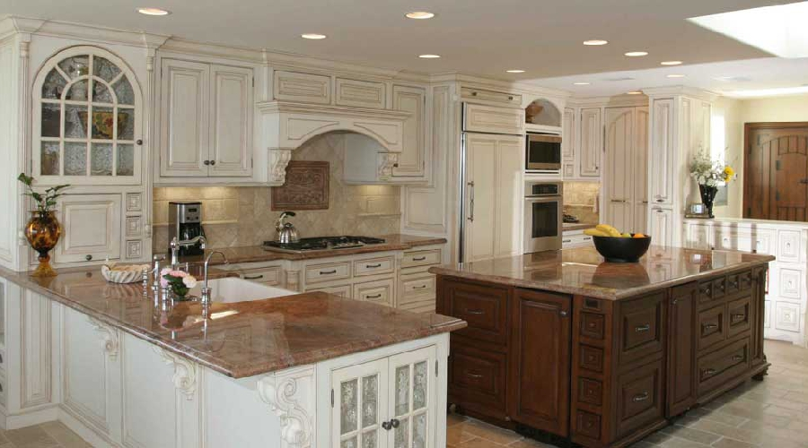
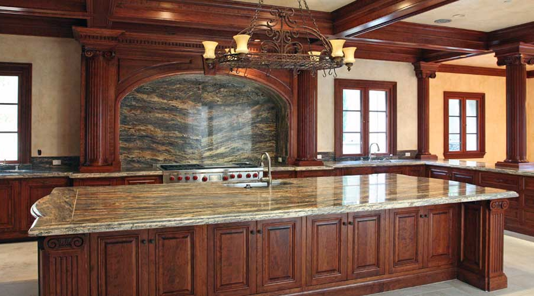
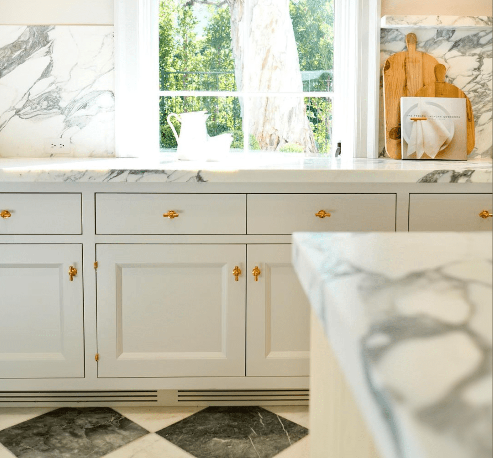

Kitchens built to
the highest standard
The kitchen is the heart of a home, and its cabinetry sets the tone for everything that surrounds it. At H & J Cabinets, we have spent over 35 years designing and building custom kitchen cabinets for some of the finest residences in Orange County. Every piece is made by hand in our Santa Ana shop, cut, joined, finished, and installed by our own team.
We do not work from standard sizes. Every cabinet is drawn to fit your specific kitchen, your ceiling height, your layout, and your vision. The result is cabinetry that looks as though it was always meant to be there — because it was.

Face-frame construction,
built to last decades
Every kitchen cabinet we produce uses traditional face-frame construction — the method that has defined American fine cabinetry for generations. The face frame reinforces the cabinet box, keeping it square and stable as homes settle over time. Doors stay aligned. Drawers operate smoothly. The structure holds.
We never use MDF for cabinet boxes. Every box is built from premium plywood selected for dimensional stability and moisture resistance. Hardware is specified at the highest grade: full-extension soft-close drawer slides, concealed hinges with six-way adjustment, and solid brass or stainless pulls selected in collaboration with your designer or sourced to your specification.

- Premium hardwoods Cherry, walnut, white oak, maple — hand-selected for grain and figure. No veneered shortcuts on exposed surfaces.
- Solid plywood boxes Every cabinet box is built from high quality hardwoods and cabinet-grade plywood for long-term structural integrity.
- Precision joinery Mortise-and-tenon face frames, dado construction, and reinforced corner blocking throughout.
- Premium hardware Blum, Hafele, and Waterstone specified to the project — installed and adjusted before we leave the site.
A selection of our
kitchen installations
Each project below was designed and built to a specific brief — different layouts, different materials, different clients — but the same standard of construction throughout.





Three decades of experience
in one kitchen
We have built custom kitchens for some of the most discerning clients and demanding projects in Southern California — homes where every detail is scrutinised, where designers and architects hold work to the highest standard, and where the final result has to be exceptional. That track record informs everything we do.
"The kitchen is where design decisions live in daily life. We build it as though we expect it to outlast the house around it."
We participate at every stage of the project. During design, we advise on what is buildable, what is durable, and what will perform well long-term. During installation, our own team handles every cabinet — no subcontractors, no handoffs. After installation, we return to make any adjustments that come from the natural settling of the home. That is our standard, and it is non-negotiable.

Painted inset cabinetry with brass hardware and Calacatta marble, Irvine